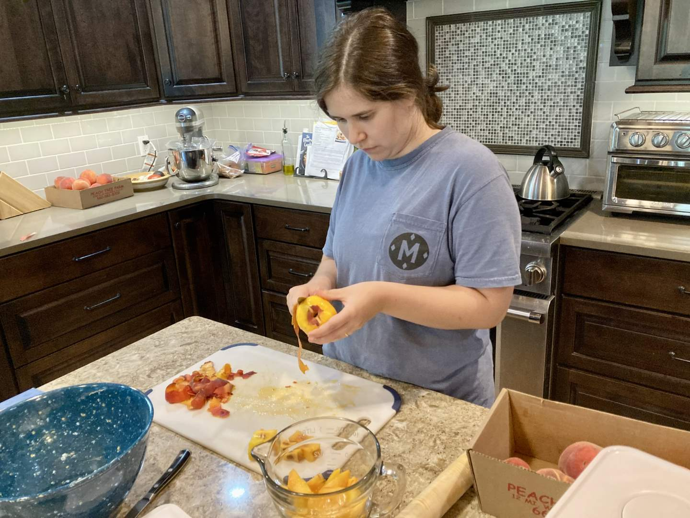
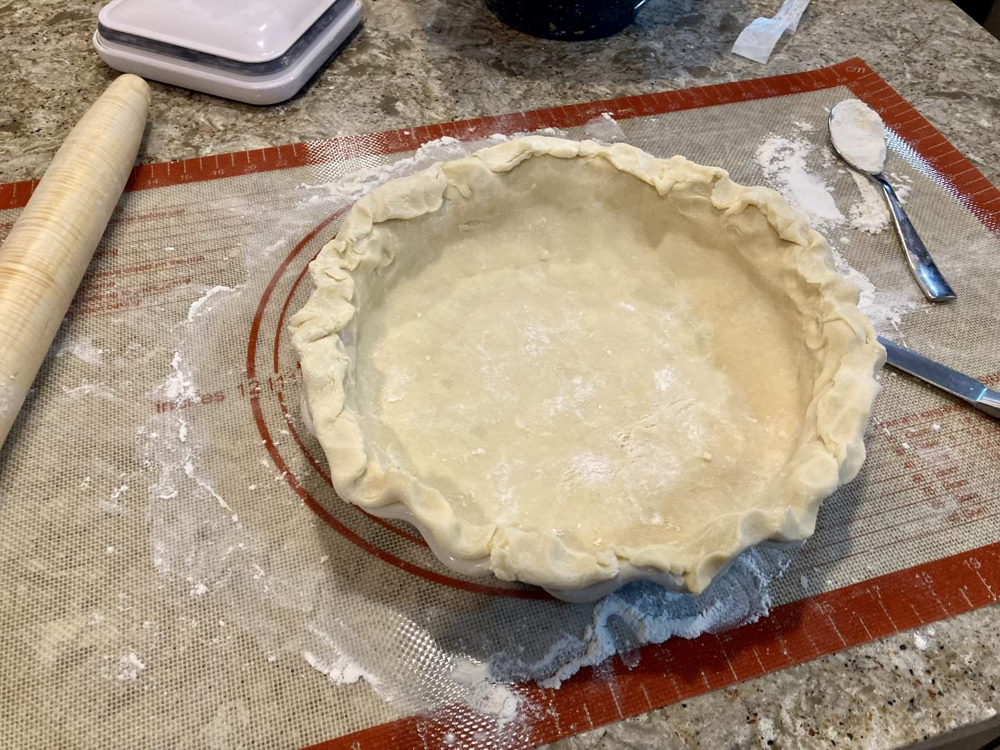
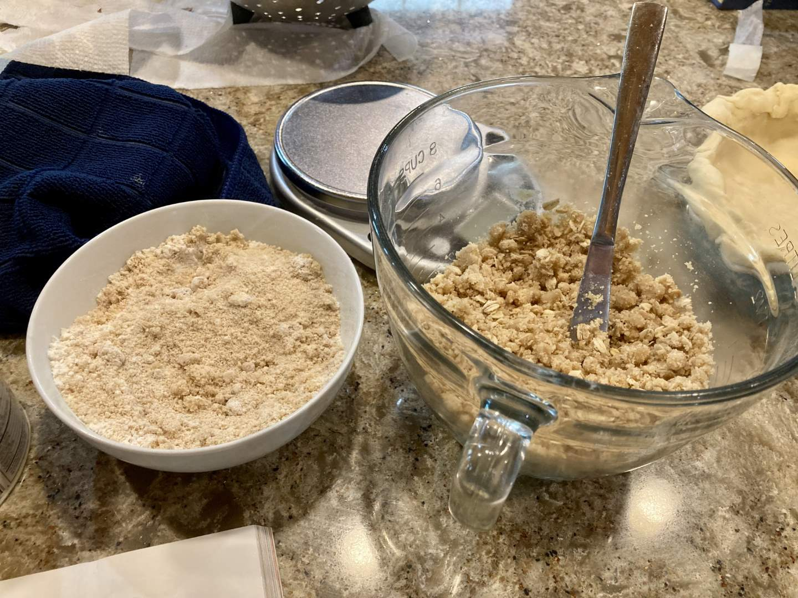
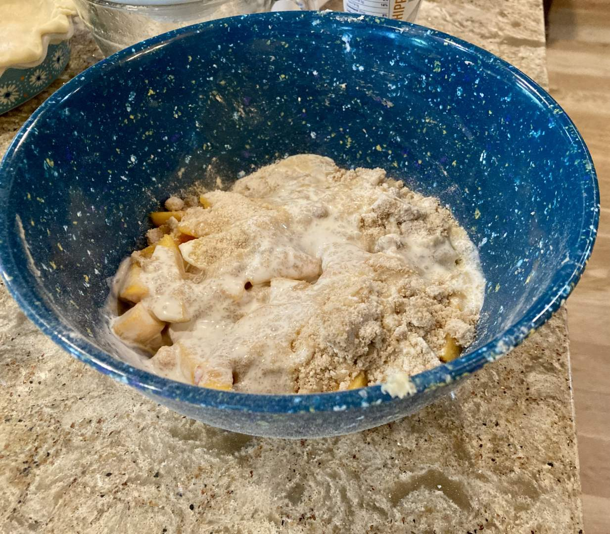
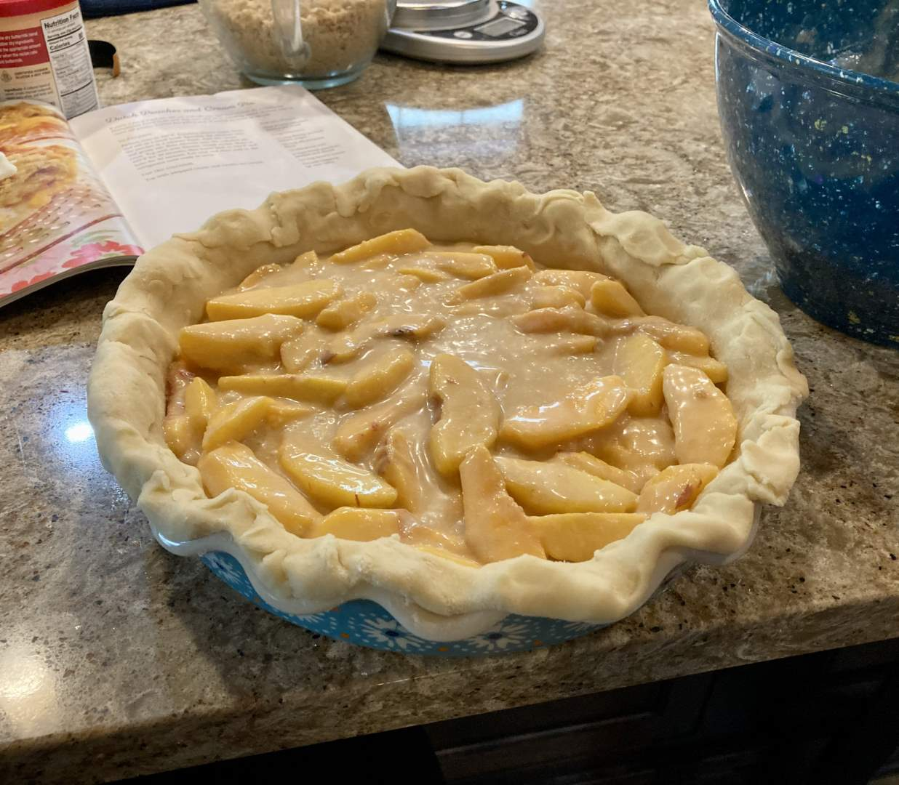
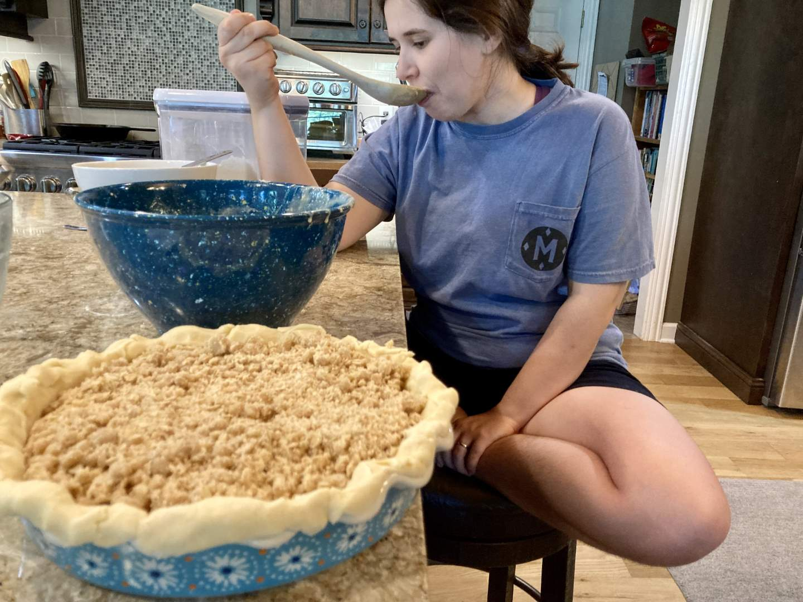
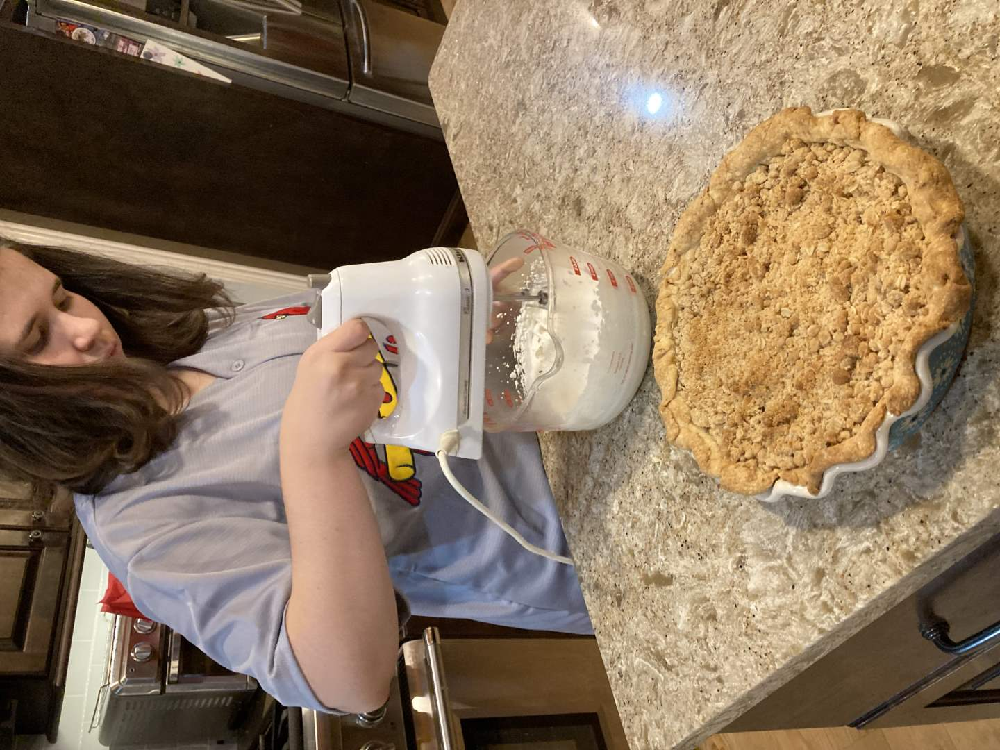
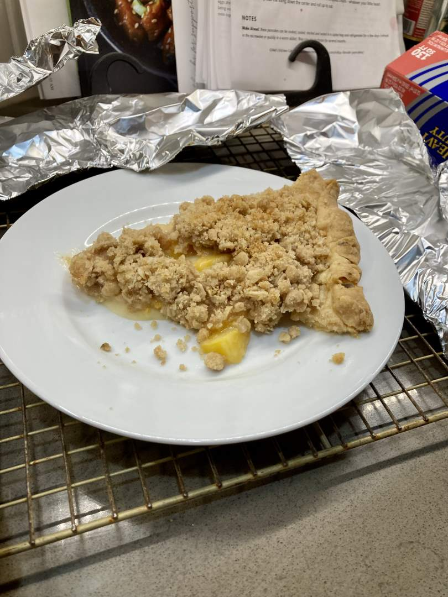

Pie 5: Dutch Peaches and Cream Pie
2023-07-27Filling recipe from p. 47 of Me, Myself, and Pie by Sherry Gore.
Crust recipe from King Arthur Baking.
Taste:
Difficulty:
Vibes:
Suggested pairings: fatayer, roasted potatoes, homemade whipped cream
When your grandmother buys you peaches for a pie, you are bound by the sacred rituals of fruit-and-vegetable-gift-giving to then take those peaches, mix them with sugar and cream, and provide a delectable treat at the next family dinner. As Ben and I are incredibly reverent toward such society-building, fundamental-to-all-goodwill rituals, our choice of pie for this week was easy.
To make the decision even easier, I had just been reading Sherry Gore’s Me, Myself, and Pie: More Than 100 Simple & Delicious Amish Recipes, a book recommended to us by my mother-in-law. Gore explores the Amish Mennonite world of pies, one which she has experienced personally and professionally. I was drawn to this book because of my father’s mother, who was Mennonite and Pennsylvania Dutch. I grew up visiting Lancaster County and Bird-in-Hand, a town which my grandmother and her family are responsible for its flourishing and strength as a tourist location today. Sherry Gore made a pie pilgrimage to Lancaster County to increase her knowledge and delight in pies, an experience that imbues the recipes in her cookbook. The recipe we used was influenced by her experience based on its name, but Amish influence is present throughout the book, like in pies made from apple schnitz (or snitz), shoo-fly pie, and whoopie pies.
 Now, onto the pie! Ben and I began our respective jobs this week, and after two mornings in a row starting at 5:30 AM, I was rather tired. Ben, however, is never too tired to make a dessert. While I rested, Ben made the crust of the pie. The choice of crust recipe was necessitated by the fact that the only fat we had was butter (clearly, we are still amateur pie-makers). I arose shortly afterward to prepare the peaches, which needed to be peeled and sliced. I had never peeled peaches before and it’s rather more difficult than peeling other fruits or vegetables that are not as soft, so Ben’s mom demonstrated how to do so and helped us prepare enough fruit.
  Meanwhile, Ben prepared an oat crumble to adorn the filling. We mixed the peaches with cream, flour, brown sugar, and salt; poured it into the awaiting pie pan, sprinkled on the crumble, and finally launched it into the oven. Ben decided to make homemade whipped cream and monitor the pie, while I rested before our big family dinner.
After a delicious meal of fatayer with decadent relishes, we played a game of Codenames to let our stomachs settle. Finally, it was time for pie. With a heaping dollop of whipped cream, all dug into the dessert and rejoiced. The peaches had an excellent texture and the accompanying filling complimented their sweetness without being overwhelming. The crust provided a salty contrast and was perfectly baked. Was this pie’s taste worthy of the illustrious triple 8 out of 8 slices? No, but it was pretty darn close.
 The best vibes for eating pie are created when one is surrounded by family and the pie is heartily declared to be “the best kind of this pie!” that has ever been tasted. The most meaningful praise originates from people you are close to, especially when that praise is directed towards something very close to you emotionally. I always grow attached to our pies because they are more labor-intensive than many other desserts and remind me of Ben and I’s commitment to make pies together. This pie was even more special because of the recipe’s existence in a cookbook exploring Amish-Mennonite pies and culture. Thanks to both of my grandmothers I feel connected to my cultural heritage as a Southerner and descendent of Pennsylvania Dutch. Reading this book and baking this pie were delightful reminders of the latter. I am glad to have rich childhood memories of Pennsylvania and I hope to carry some part of Bird-in-Hand with me wherever I go.